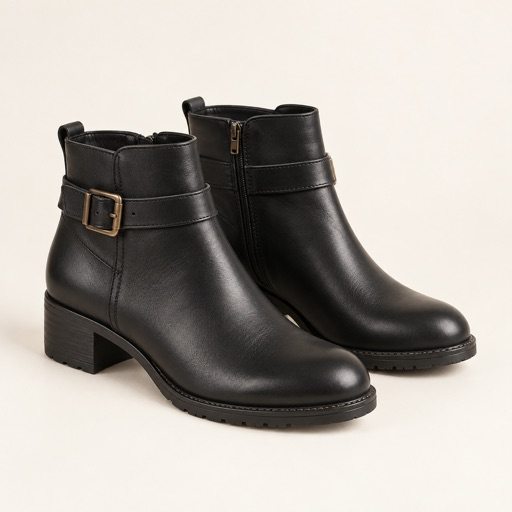

Start with you
Choose a clear portrait from Photos or Files. Optionally select a region to focus on the right person.
The outfit you imagined, on the person you are. Bring a reference and explore a different look with AI.
Choose your photos. Review the estimate. Make it yours.

A few references from the starter libraryChoose a clear portrait from Photos or Files. Optionally select a region to focus on the right person.
Add reference clothes or browse starter options. Choose a style, then add optional shoes, props or pose references.
Confirm a credit estimate before generation. Compare your result, approve it if it needs review, and save or share the image.
Fantasy Closet is designed to preserve your facial likeness and visible body proportions while fitting the reference clothes to you. Body-type choices help guide images where the body is not fully visible.
Quality checks look for anatomy, clothing and scene issues. AI can still make mistakes, so you stay in control of the final result. Approving an existing image is free; another generation requires a new estimate.
A few things to know ↓US pricing shown. Availability and localized prices are confirmed in the app and Apple’s purchase sheet. Credits per run depend on settings and possible corrections; see the estimate before confirming. Unused credits roll over and do not expire. The subscription renews monthly until canceled through Apple. One-time bundles do not renew.
No. The app connects through the Fantasy Closet backend. You do not need to enter an API key or sign in with an email to start using the app.
Selected images and instructions are sent to our backend and OpenAI when you request generation or review. Results and run files are also saved on your device. Our privacy notice explains processing, temporary recovery storage and your choices.
You can keep an existing result without another generation charge. A new run has its own estimate and can spend additional credits after confirmation. Previous generated images are not refunded just because you choose to try again.
The first-launch tutorial walks through the basics. Replay it from Settings → Tutorial & help or the floating question-mark button. You can hide that button and still access the tutorial in Settings.